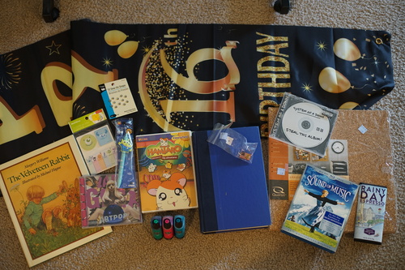

so like last night ryan found this tweet and this video that NO ONE SHOWED ME. it's been out for 5 years now and no one thought "oh fran loves cowboys, i should send her this video about gay and screaming cowboys". theres no way none of my friends knew about it and i'm feeling so betrayed. i started watching it and thought it was going to turn into a gay cowboy romance, and i wasnt disappointed! it did not turn into a gay cowboy romance at all but it was good enough to make up for it.
my friend nick has already sent me lil nas x's old town road so you dont need to email me about that one. dont worry.
Ryan's
I always need more of these
I was a lady gaga fan back in high school and somehow i missed that there was an album between the fame monster and born this way. not sure how i missed it but i already knew some of the songs. one of those rare factory sealed finds too!
I wish Viz would have been so kind to put the JP audio on it.
Colors: Green, Rhodamine Red, 320 (Cyan-ish). I wasn't entirely sure these were alcohol based, but I've now looked up the letraset website on webarchive and they do appear to be. I want the d*ng markers to show up so I can buy them!!
Ryan's
Ryan's. He wasn't going to buy any books today but this one was a good find.
Ryan's. He paid for it.
Ryan's
Ryan's
Ryan's, but I'm also eating it. It's delicous!
i ventured into... fountain pen reddit for the shits and giggles. so like... what are these people even doing with all their inks and pens. so many of them have been collecting for less than a year and have amassed a hoard already. do you really need 5-20 inked pens and 30 bottles of ink?? at least the bottles and pens are pretty i suppose. so many of these photos are just bad instagram posts too. like "haha my nails match my pen! im reading a book! i wrote a quote!"
i pray i will not start a new obsession. i really do like my new kakuno, but mostly for the ink that smells so nice to use and it honestly is super cute with the smiley nib. i probably will buy any decent fountain pen that shows up in a thrift store but i hope not to end up with a pile of LAMYs in 2 months. i need to be focusing on actually doing something... like actually drawing for once.
ive come to the conclusion that it doesnt matter how nice a ballpoint pen is, i wont like it. i DO actually like the uniball jetstream i have. it doesn't really have the feeling of a ballpoint even if it is one. gel pens are super fun but it's a little hard to find non disposable feeling bodies that are cute. i did go through every ink refill i own to see which of them fit in my little twin stars signo, and a lot of them did! i'll just steal refills out of my other pens as they run out.
PS this is the kind of pen and ink content we need on this earth
PPS i added an easter egg. you may never run into it. good luck